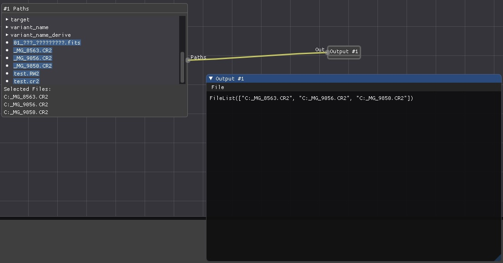
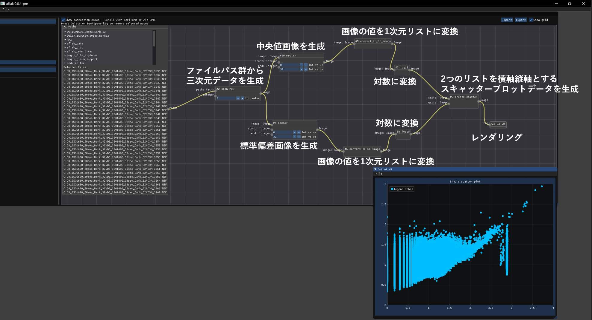

<!DOCTYPE html>
<html>

<head><meta name="generator" content="Hexo 3.8.0">
  <meta charset="utf-8">
  
  <title>自作プログラムで画像処理（Raw展開～ノイズ解析まで） | ほしよみ大学生のブログ</title>
  <meta name="viewport" content="width=device-width">
  <meta name="description" content="はじめにこんにちは．あけましておめでとうございます．今年は自作プログラムの天体画像処理機能を充実させたいという思いがあったので，年末から三が日にかけて，少しだけ進めていました．">
<meta name="keywords" content="Rust">
<meta property="og:type" content="article">
<meta property="og:title" content="自作プログラムで画像処理（Raw展開～ノイズ解析まで）">
<meta property="og:url" content="http://dabokun.github.io/2021/01/04/00000046-aflak-improc-01/index.html">
<meta property="og:site_name" content="ほしよみ大学生のブログ">
<meta property="og:description" content="はじめにこんにちは．あけましておめでとうございます．今年は自作プログラムの天体画像処理機能を充実させたいという思いがあったので，年末から三が日にかけて，少しだけ進めていました．">
<meta property="og:locale" content="ja">
<meta property="og:image" content="http://dabokun.github.io/2021/01/04/00000046-aflak-improc-01/card.jpg">
<meta property="og:updated_time" content="2021-01-04T17:59:51.749Z">
<meta name="twitter:card" content="summary_large_image">
<meta name="twitter:title" content="自作プログラムで画像処理（Raw展開～ノイズ解析まで）">
<meta name="twitter:description" content="はじめにこんにちは．あけましておめでとうございます．今年は自作プログラムの天体画像処理機能を充実させたいという思いがあったので，年末から三が日にかけて，少しだけ進めていました．">
<meta name="twitter:image" content="http://dabokun.github.io/2021/01/04/00000046-aflak-improc-01/card.jpg">
<meta name="twitter:creator" content="@dabo_pic">
  
  <link rel="alternative" href="/atom.xml" title="ほしよみ大学生のブログ" type="application/atom+xml">
  
  
  <link rel="icon" href="/images/favicon.png">
  
  <link rel="stylesheet" href="/css/style.css">
  <!--[if lt IE 9]><script src="//html5shiv.googlecode.com/svn/trunk/html5.js"></script><![endif]-->
  
</head></html>
<body>
  <div id="container">
    <div class="mobile-nav-panel">
	<i class="icon-reorder icon-large"></i>
</div>
<header id="header">
	<h1 class="blog-title">
		<a href="/">ほしよみ大学生のブログ</a>
	</h1>
	<nav class="nav">
		<ul>
			<li><a href="/">Home</a></li><li><a href="/categories">Categories</a></li><li><a href="/tags">Tags</a></li><li><a href="/archives">Archives</a></li><li><a href="/about">About</a></li><li><a href="/work">Work</a></li>
			<li><a id="nav-search-btn" class="nav-icon" title="Search"></a></li>
			<li><a href="https://github.com/dabokun"></a>
			</li>
			<li><a href="https://twitter.com/dabo_pic"></a></li>
			<li><a href="/atom.xml" id="nav-rss-link" class="nav-icon" title="RSS Feed"></a>
			</li>
		</ul>
	</nav>
	<div id="search-form-wrap">
		<form action="//google.com/search" method="get" accept-charset="UTF-8" class="search-form"><input type="search" name="q" class="search-form-input" placeholder="Search"><button type="submit" class="search-form-submit">&#xF002;</button><input type="hidden" name="sitesearch" value="http://dabokun.github.io"></form>
	</div>
</header>
    <div id="main">
      <article id="post-00000046-aflak-improc-01" class="post">
	<footer class="entry-meta-header">
		<span class="meta-elements date">
			<a href="/2021/01/04/00000046-aflak-improc-01/" class="article-date">
  <time datetime="2021-01-04T10:16:24.000Z" itemprop="datePublished">2021-01-04</time>
</a>
		</span>
		<span class="meta-elements author">astr0dab0</span>
		<div class="commentscount">
			
			<a href="http://dabokun.github.io/2021/01/04/00000046-aflak-improc-01/#disqus_thread" class="article-comment-link">Comments</a>
			
		</div>
	</footer>
	
	<header class="entry-header">
		
  
    <h1 class="article-title entry-title" itemprop="name">
      自作プログラムで画像処理（Raw展開～ノイズ解析まで）
    </h1>
  

	</header>
	<div class="entry-content">
		
		
		<div id="toc" class="toc-article">
			<p class="toc-title">目次</p>
			<ol class="toc"><li class="toc-item toc-level-3"><a class="toc-link" href="#はじめに"><span class="toc-number">1.</span> <span class="toc-text">はじめに</span></a></li><li class="toc-item toc-level-3"><a class="toc-link" href="#やっていくぞ"><span class="toc-number">2.</span> <span class="toc-text">やっていくぞ</span></a><ol class="toc-child"><li class="toc-item toc-level-4"><a class="toc-link" href="#その1-Rawを開く（ファイルパス群→三次元データ）"><span class="toc-number">2.1.</span> <span class="toc-text">その1. Rawを開く（ファイルパス群→三次元データ）</span></a></li><li class="toc-item toc-level-4"><a class="toc-link" href="#その2-統計値計算（三次元データ→二次元データ）"><span class="toc-number">2.2.</span> <span class="toc-text">その2. 統計値計算（三次元データ→二次元データ）</span></a></li><li class="toc-item toc-level-4"><a class="toc-link" href="#その3-リストへ変換"><span class="toc-number">2.3.</span> <span class="toc-text">その3. リストへ変換</span></a></li><li class="toc-item toc-level-4"><a class="toc-link" href="#その4-scatterplots-の描画"><span class="toc-number">2.4.</span> <span class="toc-text">その4. scatterplots の描画</span></a></li><li class="toc-item toc-level-4"><a class="toc-link" href="#おまけ-Fitsデータのカラー画像解釈"><span class="toc-number">2.5.</span> <span class="toc-text">おまけ. Fitsデータのカラー画像解釈</span></a></li></ol></li><li class="toc-item toc-level-3"><a class="toc-link" href="#おわりに"><span class="toc-number">3.</span> <span class="toc-text">おわりに</span></a></li></ol>
		</div>
		
		<h3 id="はじめに"><a href="#はじめに" class="headerlink" title="はじめに"></a>はじめに</h3><p>こんにちは．あけましておめでとうございます．今年は自作プログラムの天体画像処理機能を充実させたいという思いがあったので，年末から三が日にかけて，少しだけ進めていました．</p>
<a id="more"></a>
<h3 id="やっていくぞ"><a href="#やっていくぞ" class="headerlink" title="やっていくぞ"></a>やっていくぞ</h3><p>まだ特に「天体写真の画像処理用途」の機能を実装していなかった私の研究用プログラムということで，初回である今回の目標は</p>
<ul>
<li><strong>（複数の）Raw 画像を読込み</strong></li>
<li><strong>位置合わせなしコンポジット（平均値，中央値，分散，標準偏差などの統計値計算）</strong></li>
<li><strong>（主にダークデータの）ノイズ解析用 scatterplots 生成</strong></li>
</ul>
<p>となります．特にノイズ解析では<a href="https://apranat.exblog.jp/31097570/" target="_blank" rel="noopener">あぷらなーとさんがよくダークデータのノイズ解析をしてらっしゃいます</a>ので，あんな感じのことができればいいかなということになります．<br>プログラムの全般的な詳しい機能の紹介は，<a href="/2019/03/15/00000005-astrophoto-and-processing-2/">以前書いたコンセプトの記事</a>をご覧ください．</p>
<h4 id="その1-Rawを開く（ファイルパス群→三次元データ）"><a href="#その1-Rawを開く（ファイルパス群→三次元データ）" class="headerlink" title="その1. Rawを開く（ファイルパス群→三次元データ）"></a>その1. Rawを開く（ファイルパス群→三次元データ）</h4><p>まず，Raw を開くだけなら簡単です．<a href="/2019/06/04/00000009-rust-raw-loader-crate/">以前紹介した rawloader crate</a> を使用すれば開けます．<br>が，今回はコンポジットやノイズ解析をしたいので，複数枚の Raw 画像を読む必要があります．<br>これまでは一つの Path というノードで単一のデータファイルパスを表現していましたが，これを一つのノードで複数枚のリストが表現できるように改造する必要がありました．</p>
<p><strong><font color="red">これからコードをドバドバ貼っていきますが，自分のメモ代わりなので読み飛ばしてください．</font></strong></p>
<figure class="highlight rust"><table><tr><td class="gutter"><pre><span class="line">1</span><br><span class="line">2</span><br><span class="line">3</span><br><span class="line">4</span><br><span class="line">5</span><br><span class="line">6</span><br><span class="line">7</span><br><span class="line">8</span><br><span class="line">9</span><br><span class="line">10</span><br><span class="line">11</span><br><span class="line">12</span><br><span class="line">13</span><br><span class="line">14</span><br><span class="line">15</span><br><span class="line">16</span><br><span class="line">17</span><br><span class="line">18</span><br><span class="line">19</span><br><span class="line">20</span><br><span class="line">21</span><br><span class="line">22</span><br><span class="line">23</span><br><span class="line">24</span><br><span class="line">25</span><br><span class="line">26</span><br><span class="line">27</span><br><span class="line">28</span><br><span class="line">29</span><br><span class="line">30</span><br><span class="line">31</span><br><span class="line">32</span><br><span class="line">33</span><br><span class="line">34</span><br><span class="line">35</span><br><span class="line">36</span><br><span class="line">37</span><br><span class="line">38</span><br><span class="line">39</span><br><span class="line">40</span><br><span class="line">41</span><br><span class="line">42</span><br><span class="line">43</span><br><span class="line">44</span><br><span class="line">45</span><br><span class="line">46</span><br><span class="line">47</span><br><span class="line">48</span><br><span class="line">49</span><br><span class="line">50</span><br><span class="line">51</span><br><span class="line">52</span><br><span class="line">53</span><br><span class="line">54</span><br><span class="line">55</span><br><span class="line">56</span><br><span class="line">57</span><br><span class="line">58</span><br><span class="line">59</span><br><span class="line">60</span><br><span class="line">61</span><br><span class="line">62</span><br><span class="line">63</span><br><span class="line">64</span><br><span class="line">65</span><br><span class="line">66</span><br><span class="line">67</span><br><span class="line">68</span><br><span class="line">69</span><br></pre></td><td class="code"><pre><span class="line"><span class="keyword">pub</span> <span class="class"><span class="keyword">enum</span> <span class="title">PATHS</span></span> &#123;</span><br><span class="line">    Nothing,</span><br><span class="line">    FileList(<span class="built_in">Vec</span>&lt;PathBuf&gt;),</span><br><span class="line">&#125;</span><br><span class="line"><span class="keyword">impl</span> MenuBar <span class="keyword">for</span> PATHS &#123;</span><br><span class="line">    <span class="function"><span class="keyword">fn</span> <span class="title">visualize</span></span>&lt;F&gt;(&amp;<span class="keyword">self</span>, ctx: OutputWindowCtx&lt;<span class="symbol">'_</span>, <span class="symbol">'_</span>, <span class="symbol">'_</span>, <span class="symbol">'_</span>, <span class="symbol">'_</span>, <span class="symbol">'_</span>, <span class="symbol">'_</span>, F&gt;)</span><br><span class="line">    <span class="keyword">where</span></span><br><span class="line">        F: glium::backend::Facade,</span><br><span class="line">    &#123;</span><br><span class="line">        ctx.ui.text_wrapped(&amp;im_str!(<span class="string">"&#123;:?&#125;"</span>, <span class="keyword">self</span>));</span><br><span class="line">    &#125;</span><br><span class="line">    <span class="comment">/*省略*/</span></span><br><span class="line">&#125;</span><br><span class="line">IOValue::Paths(<span class="keyword">ref</span> file) =&gt; &#123;</span><br><span class="line">    <span class="keyword">match</span> file &#123;</span><br><span class="line">        primitives::PATHS::Nothing =&gt; <span class="literal">None</span>,</span><br><span class="line">        primitives::PATHS::FileList(file) =&gt; &#123;</span><br><span class="line">            <span class="keyword">if</span> read_only &#123;</span><br><span class="line">                <span class="literal">None</span></span><br><span class="line">            &#125; <span class="keyword">else</span> &#123;</span><br><span class="line">                <span class="keyword">let</span> size = ui.item_rect_size();</span><br><span class="line">                <span class="keyword">let</span> <span class="keyword">mut</span> ret = <span class="literal">Ok</span>(<span class="literal">None</span>);</span><br><span class="line">                ChildWindow::new(im_str!(<span class="string">"edit"</span>))</span><br><span class="line">                    .size([size[<span class="number">0</span>].max(<span class="number">400.0</span>), <span class="number">150.0</span>])</span><br><span class="line">                    .horizontal_scrollbar(<span class="literal">true</span>)</span><br><span class="line">                    .build(ui, || &#123;</span><br><span class="line">                        <span class="keyword">let</span> <span class="keyword">mut</span> hoge = <span class="literal">false</span>;</span><br><span class="line">                        ret = ui.file_explorer(</span><br><span class="line">                            TOP_FOLDER,</span><br><span class="line">                            &amp;[</span><br><span class="line">                                <span class="string">"fits"</span>, <span class="string">"fit"</span>, <span class="string">"fts"</span>, <span class="string">"cr2"</span>, <span class="string">"CR2"</span>, <span class="string">"RW2"</span>, <span class="string">"rw2"</span>, <span class="string">"nef"</span>, <span class="string">"NEF"</span>,</span><br><span class="line">                            ],</span><br><span class="line">                            &amp;<span class="keyword">mut</span> hoge,</span><br><span class="line">                        );</span><br><span class="line">                    &#125;);</span><br><span class="line">                ui.text(im_str!(<span class="string">"Selected Files:"</span>));</span><br><span class="line">                <span class="keyword">for</span> single_file <span class="keyword">in</span> file &#123;</span><br><span class="line">                    ui.text(single_file.to_str().unwrap_or(<span class="string">"Unrepresentable path"</span>));</span><br><span class="line">                &#125;</span><br><span class="line">                <span class="keyword">if</span> <span class="keyword">let</span> <span class="literal">Ok</span>(<span class="literal">Some</span>(new_file)) = ret &#123;</span><br><span class="line">                    <span class="keyword">let</span> <span class="keyword">mut</span> already_exist = <span class="literal">false</span>;</span><br><span class="line">                    <span class="keyword">let</span> <span class="keyword">mut</span> key = <span class="number">0</span>;</span><br><span class="line">                    <span class="keyword">for</span> single_file <span class="keyword">in</span> file &#123;</span><br><span class="line">                        <span class="keyword">if</span> *single_file == new_file &#123;</span><br><span class="line">                            already_exist = <span class="literal">true</span>;</span><br><span class="line">                            <span class="keyword">break</span>;</span><br><span class="line">                        &#125;</span><br><span class="line">                        key += <span class="number">1</span>;</span><br><span class="line">                    &#125;</span><br><span class="line">                    <span class="keyword">if</span> already_exist &#123;</span><br><span class="line">                        <span class="keyword">let</span> <span class="keyword">mut</span> new_files = file.clone();</span><br><span class="line">                        new_files.remove(key);</span><br><span class="line">                        <span class="literal">Some</span>(IOValue::Paths(primitives::PATHS::FileList(</span><br><span class="line">                            new_files.to_vec(),</span><br><span class="line">                        )))</span><br><span class="line">                    &#125; <span class="keyword">else</span> &#123;</span><br><span class="line">                        <span class="keyword">let</span> <span class="keyword">mut</span> new_files = file.clone();</span><br><span class="line">                        new_files.push(new_file);</span><br><span class="line">                        <span class="literal">Some</span>(IOValue::Paths(primitives::PATHS::FileList(</span><br><span class="line">                            new_files.to_vec(),</span><br><span class="line">                        )))</span><br><span class="line">                    &#125;</span><br><span class="line">                &#125; <span class="keyword">else</span> &#123;</span><br><span class="line">                    <span class="literal">None</span></span><br><span class="line">                &#125;</span><br><span class="line">            &#125;</span><br><span class="line">        &#125;</span><br><span class="line">    &#125;</span><br><span class="line">&#125;</span><br></pre></td></tr></table></figure>
<p>するとこんな感じに↓<br><br>なんかカレントディレクトリの表示がおかしいですが，ちゃんと動作するので今はキニシナイ．</p>
<p>次に，この Path 改め Paths を受け取り，画像を展開して<strong>三次元データ（0番目の軸で何枚目かというインデックス，1番目と2番目の軸で画像の輝度にアクセスできる）</strong>を生成するノードを作ります．</p>
<figure class="highlight rust"><table><tr><td class="gutter"><pre><span class="line">1</span><br><span class="line">2</span><br><span class="line">3</span><br><span class="line">4</span><br><span class="line">5</span><br><span class="line">6</span><br><span class="line">7</span><br><span class="line">8</span><br><span class="line">9</span><br><span class="line">10</span><br><span class="line">11</span><br><span class="line">12</span><br><span class="line">13</span><br><span class="line">14</span><br><span class="line">15</span><br><span class="line">16</span><br><span class="line">17</span><br><span class="line">18</span><br><span class="line">19</span><br><span class="line">20</span><br><span class="line">21</span><br><span class="line">22</span><br><span class="line">23</span><br><span class="line">24</span><br><span class="line">25</span><br><span class="line">26</span><br><span class="line">27</span><br><span class="line">28</span><br><span class="line">29</span><br><span class="line">30</span><br><span class="line">31</span><br><span class="line">32</span><br><span class="line">33</span><br><span class="line">34</span><br><span class="line">35</span><br><span class="line">36</span><br><span class="line">37</span><br><span class="line">38</span><br><span class="line">39</span><br><span class="line">40</span><br><span class="line">41</span><br><span class="line">42</span><br><span class="line">43</span><br><span class="line">44</span><br><span class="line">45</span><br><span class="line">46</span><br><span class="line">47</span><br><span class="line">48</span><br><span class="line">49</span><br><span class="line">50</span><br><span class="line">51</span><br><span class="line">52</span><br><span class="line">53</span><br><span class="line">54</span><br><span class="line">55</span><br><span class="line">56</span><br></pre></td><td class="code"><pre><span class="line">cake_transform!(</span><br><span class="line">    <span class="string">"Open RAW file from a Paths."</span>,</span><br><span class="line">    <span class="number">0</span>, <span class="number">1</span>, <span class="number">0</span>,</span><br><span class="line">    open_raw&lt;IOValue, IOErr&gt;(path: Paths, n: Integer = <span class="number">0</span>) -&gt; Image &#123;</span><br><span class="line">        <span class="keyword">if</span> <span class="keyword">let</span> PATHS::FileList(path) = path &#123;</span><br><span class="line">            <span class="built_in">vec!</span>[run_open_raw(path.to_vec(), *n)]</span><br><span class="line">        &#125; <span class="keyword">else</span> &#123;</span><br><span class="line">            <span class="built_in">vec!</span>[] <span class="comment">//エラーを返そう</span></span><br><span class="line">        &#125;</span><br><span class="line">    &#125;</span><br><span class="line">),</span><br><span class="line"></span><br><span class="line"><span class="function"><span class="keyword">fn</span> <span class="title">run_open_raw</span></span>&lt;P: <span class="built_in">AsRef</span>&lt;Path&gt;&gt;(path: <span class="built_in">Vec</span>&lt;P&gt;, n: <span class="built_in">i64</span>) -&gt; <span class="built_in">Result</span>&lt;IOValue, IOErr&gt; &#123;</span><br><span class="line">    <span class="keyword">let</span> pathlist_len = path.len();</span><br><span class="line">    <span class="keyword">let</span> n = n <span class="keyword">as</span> <span class="built_in">usize</span>;</span><br><span class="line">    precheck!(pathlist_len &gt; n)?;</span><br><span class="line">    <span class="keyword">let</span> <span class="keyword">mut</span> imagecount = <span class="number">0</span>;</span><br><span class="line">    <span class="keyword">let</span> <span class="keyword">mut</span> width = <span class="number">0</span>;</span><br><span class="line">    <span class="keyword">let</span> <span class="keyword">mut</span> height = <span class="number">0</span>;</span><br><span class="line">    <span class="keyword">let</span> <span class="keyword">mut</span> img = <span class="built_in">Vec</span>::new();</span><br><span class="line">    <span class="keyword">let</span> <span class="keyword">mut</span> openresult: <span class="built_in">Result</span>&lt;IOValue, IOErr&gt; = <span class="literal">Ok</span>(IOValue::Integer(<span class="number">0</span>));</span><br><span class="line">    <span class="keyword">for</span> single_path <span class="keyword">in</span> path &#123;</span><br><span class="line">        <span class="keyword">let</span> image = rawloader::decode_file(single_path);</span><br><span class="line">        <span class="keyword">match</span> image &#123;</span><br><span class="line">            <span class="literal">Ok</span>(image) =&gt; &#123;</span><br><span class="line">                <span class="keyword">if</span> imagecount == <span class="number">0</span> &#123;</span><br><span class="line">                    width = image.width;</span><br><span class="line">                    height = image.height;</span><br><span class="line">                &#125; <span class="keyword">else</span> <span class="keyword">if</span> width != image.width || height != image.height &#123;</span><br><span class="line">                    eprintln!(<span class="string">"Couldn't load images with different size images.\n"</span>); <span class="comment">//エラーを返そう</span></span><br><span class="line">                    <span class="keyword">break</span>;</span><br><span class="line">                &#125;</span><br><span class="line">                <span class="keyword">if</span> <span class="keyword">let</span> rawloader::RawImageData::Integer(data) = image.data &#123;</span><br><span class="line">                    <span class="keyword">for</span> pix <span class="keyword">in</span> data &#123;</span><br><span class="line">                        img.push(pix <span class="keyword">as</span> <span class="built_in">f32</span>);</span><br><span class="line">                    &#125;</span><br><span class="line">                &#125; <span class="keyword">else</span> &#123;</span><br><span class="line">                    eprintln!(<span class="string">"Don't know how to process non-integer raw files"</span>); <span class="comment">//エラーを返そう</span></span><br><span class="line">                    <span class="keyword">break</span>;</span><br><span class="line">                &#125;</span><br><span class="line">            &#125;</span><br><span class="line">            <span class="literal">Err</span>(err) =&gt; openresult = <span class="literal">Err</span>(IOErr::RawLoaderError(<span class="built_in">format!</span>(<span class="string">"&#123;:?&#125;"</span>, err))),</span><br><span class="line">        &#125;</span><br><span class="line">        imagecount += <span class="number">1</span>;</span><br><span class="line">    &#125;</span><br><span class="line">    <span class="keyword">match</span> openresult &#123;</span><br><span class="line">        <span class="literal">Ok</span>(_) =&gt; &#123;</span><br><span class="line">            <span class="keyword">let</span> img = Array::from_shape_vec((pathlist_len, height, width), img).unwrap();</span><br><span class="line">            <span class="literal">Ok</span>(IOValue::Image(WcsArray::from_array(Dimensioned::new(</span><br><span class="line">                img.into_dyn(),</span><br><span class="line">                Unit::<span class="literal">None</span>,</span><br><span class="line">            ))))</span><br><span class="line">        &#125;</span><br><span class="line">        <span class="literal">Err</span>(_) =&gt; openresult,</span><br><span class="line">    &#125;</span><br><span class="line">&#125;</span><br></pre></td></tr></table></figure>
<p>cake_transform!マクロは，ノードを作るためのマクロです．引数で入力の型を指定し，-&gt;以降に出力の型を指定します．複数のデータを出力することも可能です．実際のデータは，<code>Vec&lt;Result&lt;IOValue, IOErr&gt;&gt;</code> という型のベクタで返しています．<br><div class="twitter-wrapper"><blockquote class="twitter-tweet"><a href="https://twitter.com/dabo_pic/status/1345054054527877121" target="_blank" rel="noopener"></a></blockquote></div><script async defer src="//platform.twitter.com/widgets.js" charset="utf-8"></script><br>i番目の画像をスライスして取り出して表示できています．</p>
<p>これで統計値計算への準備が整いましたので，<strong>このタイミングであぷらなーとさんに連絡をし，Nikon D3 と D810A のダークデータをいただきました（妥当性の検証ができるのはとても助かります，ありがたいです）</strong>．とりあえず D3 のダーク Raw データが開けそうなので，こちらを使っていきます．</p>
<h4 id="その2-統計値計算（三次元データ→二次元データ）"><a href="#その2-統計値計算（三次元データ→二次元データ）" class="headerlink" title="その2. 統計値計算（三次元データ→二次元データ）"></a>その2. 統計値計算（三次元データ→二次元データ）</h4><p>三次元データを生成したら，<strong>各種統計値を計算する</strong>ノードを作っていきます．平均はすでに実装済みでしたし，分散と標準偏差も使っている <a href="https://docs.rs/ndarray/0.14.0/ndarray/" target="_blank" rel="noopener">ndarray</a> ライブラリに<a href="https://docs.rs/ndarray/0.14.0/ndarray/struct.ArrayBase.html#method.mean_axis" target="_blank" rel="noopener">計算するための関数</a>があります．中央値だけは，こちらで実装する必要がありそうだったので用意．</p>
<figure class="highlight rust"><table><tr><td class="gutter"><pre><span class="line">1</span><br><span class="line">2</span><br><span class="line">3</span><br><span class="line">4</span><br><span class="line">5</span><br><span class="line">6</span><br><span class="line">7</span><br><span class="line">8</span><br><span class="line">9</span><br><span class="line">10</span><br><span class="line">11</span><br><span class="line">12</span><br><span class="line">13</span><br><span class="line">14</span><br><span class="line">15</span><br><span class="line">16</span><br><span class="line">17</span><br><span class="line">18</span><br><span class="line">19</span><br><span class="line">20</span><br><span class="line">21</span><br><span class="line">22</span><br><span class="line">23</span><br><span class="line">24</span><br><span class="line">25</span><br><span class="line">26</span><br><span class="line">27</span><br><span class="line">28</span><br><span class="line">29</span><br><span class="line">30</span><br><span class="line">31</span><br><span class="line">32</span><br><span class="line">33</span><br><span class="line">34</span><br><span class="line">35</span><br><span class="line">36</span><br><span class="line">37</span><br><span class="line">38</span><br><span class="line">39</span><br><span class="line">40</span><br><span class="line">41</span><br><span class="line">42</span><br><span class="line">43</span><br><span class="line">44</span><br><span class="line">45</span><br><span class="line">46</span><br><span class="line">47</span><br><span class="line">48</span><br><span class="line">49</span><br><span class="line">50</span><br><span class="line">51</span><br><span class="line">52</span><br><span class="line">53</span><br><span class="line">54</span><br><span class="line">55</span><br><span class="line">56</span><br><span class="line">57</span><br><span class="line">58</span><br><span class="line">59</span><br><span class="line">60</span><br><span class="line">61</span><br><span class="line">62</span><br><span class="line">63</span><br><span class="line">64</span><br><span class="line">65</span><br><span class="line">66</span><br><span class="line">67</span><br><span class="line">68</span><br><span class="line">69</span><br><span class="line">70</span><br><span class="line">71</span><br><span class="line">72</span><br><span class="line">73</span><br><span class="line">74</span><br><span class="line">75</span><br><span class="line">76</span><br><span class="line">77</span><br><span class="line">78</span><br><span class="line">79</span><br><span class="line">80</span><br><span class="line">81</span><br><span class="line">82</span><br><span class="line">83</span><br><span class="line">84</span><br><span class="line">85</span><br><span class="line">86</span><br><span class="line">87</span><br><span class="line">88</span><br><span class="line">89</span><br><span class="line">90</span><br><span class="line">91</span><br><span class="line">92</span><br><span class="line">93</span><br><span class="line">94</span><br><span class="line">95</span><br><span class="line">96</span><br><span class="line">97</span><br><span class="line">98</span><br><span class="line">99</span><br><span class="line">100</span><br><span class="line">101</span><br></pre></td><td class="code"><pre><span class="line">cake_transform!(</span><br><span class="line">    <span class="string">"Average for Image. Parameters: a=start, b=end (a &lt;= b).</span></span><br><span class="line"><span class="string">Compute (Sum[k, &#123;a, b&#125;]image[k]) / (b - a). image[k] is k-th slice of image.</span></span><br><span class="line"><span class="string">Second output contains (a + b) / 2</span></span><br><span class="line"><span class="string">Third output contains (b - a)</span></span><br><span class="line"><span class="string">Note: indices for a and b start from 0"</span>,</span><br><span class="line">    <span class="number">1</span>, <span class="number">0</span>, <span class="number">0</span>,</span><br><span class="line">    average&lt;IOValue, IOErr&gt;(image: Image, start: Integer = <span class="number">0</span>, end: Integer = <span class="number">1</span>) -&gt; Image, Float, Float &#123;</span><br><span class="line">        <span class="keyword">let</span> middle = (*start <span class="keyword">as</span> <span class="built_in">f32</span> + *end <span class="keyword">as</span> <span class="built_in">f32</span>) / <span class="number">2.0</span>;</span><br><span class="line">        <span class="keyword">let</span> width = *end <span class="keyword">as</span> <span class="built_in">f32</span> - *start <span class="keyword">as</span> <span class="built_in">f32</span>;</span><br><span class="line">        <span class="built_in">vec!</span>[run_average(image, *start, *end), <span class="literal">Ok</span>(IOValue::Float(middle)), <span class="literal">Ok</span>(IOValue::Float(width))]</span><br><span class="line">    &#125;</span><br><span class="line">),</span><br><span class="line">cake_transform!(</span><br><span class="line">    <span class="string">"Variance for Image. Parameters: a=start, b=end (a &lt;= b)."</span>,</span><br><span class="line">    <span class="number">1</span>, <span class="number">0</span>, <span class="number">0</span>,</span><br><span class="line">    variance&lt;IOValue, IOErr&gt;(image: Image, start: Integer = <span class="number">0</span>, end: Integer = <span class="number">1</span>) -&gt; Image&#123;</span><br><span class="line">        <span class="built_in">vec!</span>[run_variance(image, *start, *end)]</span><br><span class="line">    &#125;</span><br><span class="line">),</span><br><span class="line">cake_transform!(</span><br><span class="line">    <span class="string">"Stddev for Image. Parameters: a=start, b=end (a &lt;= b)."</span>,</span><br><span class="line">    <span class="number">1</span>, <span class="number">0</span>, <span class="number">0</span>,</span><br><span class="line">    stddev&lt;IOValue, IOErr&gt;(image: Image, start: Integer = <span class="number">0</span>, end: Integer = <span class="number">1</span>) -&gt; Image&#123;</span><br><span class="line">        <span class="built_in">vec!</span>[run_stddev(image, *start, *end)]</span><br><span class="line">    &#125;</span><br><span class="line">),</span><br><span class="line">cake_transform!(</span><br><span class="line">    <span class="string">"Median for Image. Parameters: a=start, b=end (a &lt;= b)."</span>,</span><br><span class="line">    <span class="number">1</span>, <span class="number">0</span>, <span class="number">0</span>,</span><br><span class="line">    median&lt;IOValue, IOErr&gt;(image: Image, start: Integer = <span class="number">0</span>, end: Integer = <span class="number">1</span>) -&gt; Image&#123;</span><br><span class="line">        <span class="built_in">vec!</span>[run_median(image, *start, *end)]</span><br><span class="line">    &#125;</span><br><span class="line">),</span><br><span class="line"></span><br><span class="line"><span class="function"><span class="keyword">fn</span> <span class="title">reduce_array_slice</span></span>&lt;F&gt;(image: &amp;WcsArray, start: <span class="built_in">i64</span>, end: <span class="built_in">i64</span>, f: F) -&gt; <span class="built_in">Result</span>&lt;IOValue, IOErr&gt;</span><br><span class="line"><span class="keyword">where</span></span><br><span class="line">    F: <span class="built_in">Fn</span>(&amp;ArrayViewD&lt;<span class="built_in">f32</span>&gt;) -&gt; ArrayD&lt;<span class="built_in">f32</span>&gt;,</span><br><span class="line">&#123;</span><br><span class="line">    <span class="keyword">let</span> start = try_into_unsigned!(start)?;</span><br><span class="line">    <span class="keyword">let</span> end = try_into_unsigned!(end)?;</span><br><span class="line">    is_sliceable!(image, start, end)?;</span><br><span class="line"></span><br><span class="line">    <span class="keyword">let</span> image_val = image.scalar();</span><br><span class="line"></span><br><span class="line">    <span class="keyword">let</span> slices = image_val.slice_axis(Axis(<span class="number">0</span>), Slice::from(start..end));</span><br><span class="line">    <span class="keyword">let</span> raw = f(&amp;slices);</span><br><span class="line">    <span class="keyword">let</span> ndim = raw.ndim();</span><br><span class="line"></span><br><span class="line">    <span class="keyword">let</span> wrap_with_unit = image.make_slice(</span><br><span class="line">        &amp;(<span class="number">0</span>..ndim).map(|i| (i, <span class="number">0.0</span>, <span class="number">1.0</span>)).collect::&lt;<span class="built_in">Vec</span>&lt;_&gt;&gt;(),</span><br><span class="line">        image.array().with_new_value(raw),</span><br><span class="line">    );</span><br><span class="line"></span><br><span class="line">    <span class="literal">Ok</span>(IOValue::Image(wrap_with_unit))</span><br><span class="line">&#125;</span><br><span class="line"></span><br><span class="line"><span class="function"><span class="keyword">fn</span> <span class="title">run_average</span></span>(image: &amp;WcsArray, start: <span class="built_in">i64</span>, end: <span class="built_in">i64</span>) -&gt; <span class="built_in">Result</span>&lt;IOValue, IOErr&gt; &#123;</span><br><span class="line">    reduce_array_slice(image, start, end, |slices| slices.mean_axis(Axis(<span class="number">0</span>)))</span><br><span class="line">&#125;</span><br><span class="line"></span><br><span class="line"><span class="function"><span class="keyword">fn</span> <span class="title">run_variance</span></span>(image: &amp;WcsArray, start: <span class="built_in">i64</span>, end: <span class="built_in">i64</span>) -&gt; <span class="built_in">Result</span>&lt;IOValue, IOErr&gt; &#123;</span><br><span class="line">    reduce_array_slice(image, start, end, |slices| slices.var_axis(Axis(<span class="number">0</span>), <span class="number">1.0</span>))</span><br><span class="line">&#125;</span><br><span class="line"></span><br><span class="line"><span class="function"><span class="keyword">fn</span> <span class="title">run_stddev</span></span>(image: &amp;WcsArray, start: <span class="built_in">i64</span>, end: <span class="built_in">i64</span>) -&gt; <span class="built_in">Result</span>&lt;IOValue, IOErr&gt; &#123;</span><br><span class="line">    reduce_array_slice(image, start, end, |slices| slices.std_axis(Axis(<span class="number">0</span>), <span class="number">1.0</span>))</span><br><span class="line">&#125;</span><br><span class="line"></span><br><span class="line"><span class="function"><span class="keyword">fn</span> <span class="title">run_median</span></span>(image: &amp;WcsArray, start: <span class="built_in">i64</span>, end: <span class="built_in">i64</span>) -&gt; <span class="built_in">Result</span>&lt;IOValue, IOErr&gt; &#123;</span><br><span class="line">    <span class="keyword">let</span> start = try_into_unsigned!(start)?;</span><br><span class="line">    <span class="keyword">let</span> end = try_into_unsigned!(end)?;</span><br><span class="line">    is_sliceable!(image, start, end)?;</span><br><span class="line"></span><br><span class="line">    <span class="keyword">let</span> image_val = image.scalar();</span><br><span class="line"></span><br><span class="line">    <span class="keyword">let</span> slices = image_val.slice_axis(Axis(<span class="number">0</span>), Slice::from(start..end));</span><br><span class="line">    <span class="keyword">let</span> dim = slices.dim();</span><br><span class="line">    <span class="keyword">let</span> size = dim.as_array_view();</span><br><span class="line">    <span class="keyword">let</span> new_size: <span class="built_in">Vec</span>&lt;_&gt; = size.iter().skip(<span class="number">1</span>).cloned().collect();</span><br><span class="line"></span><br><span class="line">    <span class="keyword">let</span> result = ArrayD::from_shape_fn(new_size, |index| &#123;</span><br><span class="line">        <span class="keyword">let</span> <span class="keyword">mut</span> vals = <span class="built_in">Vec</span>::new();</span><br><span class="line">        <span class="keyword">for</span> (_, slice) <span class="keyword">in</span> slices.axis_iter(Axis(<span class="number">0</span>)).enumerate() &#123;</span><br><span class="line">            vals.push(slice[&amp;index]);</span><br><span class="line">        &#125;</span><br><span class="line">        <span class="comment">//consider NaN!</span></span><br><span class="line">        vals.sort_by(|a, b| a.partial_cmp(b).unwrap());</span><br><span class="line">        <span class="keyword">let</span> n = vals.len();</span><br><span class="line">        <span class="keyword">if</span> n % <span class="number">2</span> == <span class="number">1</span> &#123;</span><br><span class="line">            vals[(n - <span class="number">1</span>) / <span class="number">2</span>]</span><br><span class="line">        &#125; <span class="keyword">else</span> &#123;</span><br><span class="line">            (vals[n / <span class="number">2</span>] + vals[n / <span class="number">2</span> - <span class="number">1</span>]) / <span class="number">2.0</span></span><br><span class="line">        &#125;</span><br><span class="line">    &#125;);</span><br><span class="line"></span><br><span class="line">    <span class="literal">Ok</span>(IOValue::Image(WcsArray::from_array(Dimensioned::new(</span><br><span class="line">        result,</span><br><span class="line">        Unit::<span class="literal">None</span>,</span><br><span class="line">    ))))</span><br><span class="line">&#125;</span><br></pre></td></tr></table></figure>
<div class="twitter-wrapper"><blockquote class="twitter-tweet"><a href="https://twitter.com/dabo_pic/status/1345274427907313668" target="_blank" rel="noopener"></a></blockquote></div><script async defer src="//platform.twitter.com/widgets.js" charset="utf-8"></script>
<p>これは平均を計算するノード（average ノード）を使った例です．3枚のデタラメなライトフレームを単純に加算平均してます．</p>
<p>これで位置合わせなしコンポジット機構もできましたので，<strong>位置合わせのいらない master dark や master flat をコンポジットするのはこのプログラムだけで完結できる</strong>ということになります．やったー．</p>
<h4 id="その3-リストへ変換"><a href="#その3-リストへ変換" class="headerlink" title="その3. リストへ変換"></a>その3. リストへ変換</h4><p>統計値計算をして得られるデータは二次元のデータです．各画素に，その位置の画素の統計値が入っています．ノイズ解析用 scatterplots ではこれらの統計値を横軸，縦軸の値として使用するため，<strong>一次元リストへ変換</strong>しておくと便利です．<br>ついでに常用対数を通した値にしておきます．</p>
<figure class="highlight rust"><table><tr><td class="gutter"><pre><span class="line">1</span><br><span class="line">2</span><br><span class="line">3</span><br><span class="line">4</span><br><span class="line">5</span><br><span class="line">6</span><br><span class="line">7</span><br><span class="line">8</span><br><span class="line">9</span><br><span class="line">10</span><br><span class="line">11</span><br><span class="line">12</span><br><span class="line">13</span><br><span class="line">14</span><br><span class="line">15</span><br><span class="line">16</span><br><span class="line">17</span><br><span class="line">18</span><br><span class="line">19</span><br><span class="line">20</span><br><span class="line">21</span><br><span class="line">22</span><br><span class="line">23</span><br><span class="line">24</span><br><span class="line">25</span><br><span class="line">26</span><br><span class="line">27</span><br><span class="line">28</span><br><span class="line">29</span><br><span class="line">30</span><br><span class="line">31</span><br><span class="line">32</span><br><span class="line">33</span><br><span class="line">34</span><br><span class="line">35</span><br><span class="line">36</span><br><span class="line">37</span><br><span class="line">38</span><br><span class="line">39</span><br><span class="line">40</span><br><span class="line">41</span><br><span class="line">42</span><br><span class="line">43</span><br></pre></td><td class="code"><pre><span class="line">cake_transform!(</span><br><span class="line">    <span class="string">"Convert 2d image to 1d list."</span>,</span><br><span class="line">    <span class="number">1</span>, <span class="number">0</span>, <span class="number">0</span>,</span><br><span class="line">    convert_to_1d_image&lt;IOValue, IOErr&gt;(image: Image) -&gt; Image&#123;</span><br><span class="line">        <span class="built_in">vec!</span>[run_convert_to_1d(image)]</span><br><span class="line">    &#125;</span><br><span class="line">),</span><br><span class="line">cake_transform!(</span><br><span class="line">    <span class="string">"Convert to log10"</span>,</span><br><span class="line">    <span class="number">1</span>, <span class="number">0</span>, <span class="number">0</span>,</span><br><span class="line">    log10&lt;IOValue, IOErr&gt;(image: Image) -&gt; Image &#123;</span><br><span class="line">        <span class="built_in">vec!</span>[run_log10(image)]</span><br><span class="line">    &#125;</span><br><span class="line">),</span><br><span class="line"></span><br><span class="line"><span class="function"><span class="keyword">fn</span> <span class="title">run_convert_to_1d</span></span>(image: &amp;WcsArray) -&gt; <span class="built_in">Result</span>&lt;IOValue, IOErr&gt; &#123;</span><br><span class="line">    dim_is!(image, <span class="number">2</span>)?;</span><br><span class="line">    <span class="keyword">let</span> image_val = image.scalar();</span><br><span class="line"></span><br><span class="line">    <span class="keyword">let</span> list_size = *image_val.dim().as_array_view().first().unwrap();</span><br><span class="line">    <span class="keyword">let</span> <span class="keyword">mut</span> list = <span class="built_in">Vec</span>::with_capacity(list_size);</span><br><span class="line">    <span class="keyword">for</span> i <span class="keyword">in</span> <span class="number">0</span>..list_size &#123;</span><br><span class="line">        <span class="keyword">for</span> val <span class="keyword">in</span> image_val.slice(s![i, ..]) &#123;</span><br><span class="line">            list.push(*val);</span><br><span class="line">        &#125;</span><br><span class="line">    &#125;</span><br><span class="line">    <span class="literal">Ok</span>(IOValue::Image(</span><br><span class="line">        image.make_slice(</span><br><span class="line">            &amp;[(<span class="number">2</span>, <span class="number">0.0</span>, <span class="number">1.0</span>)],</span><br><span class="line">            image</span><br><span class="line">                .array()</span><br><span class="line">                .with_new_value(Array1::from_vec(list).into_dyn()),</span><br><span class="line">        ),</span><br><span class="line">    ))</span><br><span class="line">&#125;</span><br><span class="line"></span><br><span class="line"><span class="function"><span class="keyword">fn</span> <span class="title">run_log10</span></span>(image: &amp;WcsArray) -&gt; <span class="built_in">Result</span>&lt;IOValue, IOErr&gt; &#123;</span><br><span class="line">    <span class="keyword">let</span> <span class="keyword">mut</span> out = image.clone();</span><br><span class="line">    <span class="keyword">for</span> v <span class="keyword">in</span> out.scalar_mut().iter_mut() &#123;</span><br><span class="line">        *v = v.log10();</span><br><span class="line">    &#125;</span><br><span class="line">    <span class="literal">Ok</span>(IOValue::Image(out))</span><br><span class="line">&#125;</span><br></pre></td></tr></table></figure>
<h4 id="その4-scatterplots-の描画"><a href="#その4-scatterplots-の描画" class="headerlink" title="その4. scatterplots の描画"></a>その4. scatterplots の描画</h4><p>これらの2つのリストから，scatterplots データを作っていきます．このプログラムでは<strong>様々な次元のデータを様々な形式で見られるようにしたい</strong>ので，最終データには「タグ文字列」を付加するようにしています．今回の場合，<strong>形状が (2, データ数) の “scatter” タグがついた二次元データをscatterplots と解釈して描画</strong>することになります．</p>
<figure class="highlight rust"><table><tr><td class="gutter"><pre><span class="line">1</span><br><span class="line">2</span><br><span class="line">3</span><br><span class="line">4</span><br><span class="line">5</span><br><span class="line">6</span><br><span class="line">7</span><br><span class="line">8</span><br><span class="line">9</span><br><span class="line">10</span><br><span class="line">11</span><br><span class="line">12</span><br><span class="line">13</span><br><span class="line">14</span><br><span class="line">15</span><br><span class="line">16</span><br><span class="line">17</span><br><span class="line">18</span><br><span class="line">19</span><br><span class="line">20</span><br><span class="line">21</span><br><span class="line">22</span><br><span class="line">23</span><br><span class="line">24</span><br><span class="line">25</span><br><span class="line">26</span><br><span class="line">27</span><br><span class="line">28</span><br><span class="line">29</span><br><span class="line">30</span><br><span class="line">31</span><br><span class="line">32</span><br><span class="line">33</span><br><span class="line">34</span><br><span class="line">35</span><br><span class="line">36</span><br><span class="line">37</span><br><span class="line">38</span><br><span class="line">39</span><br><span class="line">40</span><br><span class="line">41</span><br><span class="line">42</span><br><span class="line">43</span><br><span class="line">44</span><br></pre></td><td class="code"><pre><span class="line">cake_transform!(</span><br><span class="line">    <span class="string">"Create scatterplots from two 1D lists."</span>,</span><br><span class="line">    <span class="number">1</span>, <span class="number">0</span>, <span class="number">0</span>,</span><br><span class="line">    create_scatter&lt;IOValue, IOErr&gt;(xaxis: Image, yaxis: Image) -&gt; Image&#123;</span><br><span class="line">        <span class="built_in">vec!</span>[run_create_scatter(xaxis, yaxis)]</span><br><span class="line">    &#125;</span><br><span class="line">),</span><br><span class="line"></span><br><span class="line"><span class="function"><span class="keyword">fn</span> <span class="title">run_create_scatter</span></span>(xaxis: &amp;WcsArray, yaxis: &amp;WcsArray) -&gt; <span class="built_in">Result</span>&lt;IOValue, IOErr&gt; &#123;</span><br><span class="line">    dim_is!(xaxis, <span class="number">1</span>)?;</span><br><span class="line">    dim_is!(yaxis, <span class="number">1</span>)?;</span><br><span class="line">    are_same_dim!(xaxis, yaxis)?;</span><br><span class="line">    <span class="keyword">let</span> image_val = xaxis.scalar();</span><br><span class="line">    <span class="keyword">let</span> width = image_val.len();</span><br><span class="line">    <span class="keyword">let</span> <span class="keyword">mut</span> img = <span class="built_in">Vec</span>::with_capacity(<span class="number">2</span> * width);</span><br><span class="line">    <span class="keyword">for</span> i <span class="keyword">in</span> <span class="number">0</span>..width &#123;</span><br><span class="line">        <span class="keyword">for</span> val <span class="keyword">in</span> image_val.slice(s![i]) &#123;</span><br><span class="line">            img.push(*val);</span><br><span class="line">        &#125;</span><br><span class="line">    &#125;</span><br><span class="line">    <span class="keyword">let</span> image_val = yaxis.scalar();</span><br><span class="line">    <span class="keyword">for</span> i <span class="keyword">in</span> <span class="number">0</span>..width &#123;</span><br><span class="line">        <span class="keyword">for</span> val <span class="keyword">in</span> image_val.slice(s![i]) &#123;</span><br><span class="line">            img.push(*val);</span><br><span class="line">        &#125;</span><br><span class="line">    &#125;</span><br><span class="line">    <span class="keyword">let</span> <span class="keyword">mut</span> datapoints = <span class="built_in">Vec</span>::new();</span><br><span class="line">    <span class="keyword">for</span> i <span class="keyword">in</span> <span class="number">0</span>..width &#123;</span><br><span class="line">        datapoints.push((img[i], img[i + width]));</span><br><span class="line">    &#125;</span><br><span class="line">    datapoints.sort_by(|a, b| a.partial_cmp(b).unwrap());</span><br><span class="line">    <span class="keyword">let</span> <span class="keyword">mut</span> res = <span class="built_in">Vec</span>::with_capacity(<span class="number">2</span> * width);</span><br><span class="line">    <span class="keyword">for</span> i <span class="keyword">in</span> <span class="number">0</span>..width &#123;</span><br><span class="line">        res.push(datapoints[i].<span class="number">0</span>);</span><br><span class="line">    &#125;</span><br><span class="line">    <span class="keyword">for</span> i <span class="keyword">in</span> <span class="number">0</span>..width &#123;</span><br><span class="line">        res.push(datapoints[i].<span class="number">1</span>);</span><br><span class="line">    &#125;</span><br><span class="line">    <span class="keyword">let</span> img = Array::from_shape_vec((<span class="number">2</span>, width), res).unwrap();</span><br><span class="line">    <span class="literal">Ok</span>(IOValue::Image(WcsArray::from_array_and_tag(</span><br><span class="line">        Dimensioned::new(img.into_dyn(), Unit::<span class="literal">None</span>),</span><br><span class="line">        <span class="literal">Some</span>(<span class="built_in">String</span>::from(<span class="string">"scatter"</span>)), <span class="comment">//タグを付与するよ</span></span><br><span class="line">    )))</span><br><span class="line">&#125;</span><br></pre></td></tr></table></figure>
<p>うーん．コードが汚い．ここはなんとかしたいですね…．<br>データポイントをとりあえずソートしています．これは描画を軽くするために必要なのですが，あとあとアルゴリズムを変えるかもしれません．<br>最後に scatterplots を描画してみます．ライブラリは <a href="https://docs.rs/implot/0.3.0/implot/" target="_blank" rel="noopener">implot</a> を利用．</p>
<figure class="highlight rust"><table><tr><td class="gutter"><pre><span class="line">1</span><br><span class="line">2</span><br><span class="line">3</span><br><span class="line">4</span><br><span class="line">5</span><br><span class="line">6</span><br><span class="line">7</span><br><span class="line">8</span><br><span class="line">9</span><br><span class="line">10</span><br><span class="line">11</span><br><span class="line">12</span><br><span class="line">13</span><br><span class="line">14</span><br><span class="line">15</span><br><span class="line">16</span><br><span class="line">17</span><br><span class="line">18</span><br><span class="line">19</span><br><span class="line">20</span><br><span class="line">21</span><br><span class="line">22</span><br><span class="line">23</span><br><span class="line">24</span><br><span class="line">25</span><br><span class="line">26</span><br><span class="line">27</span><br><span class="line">28</span><br><span class="line">29</span><br><span class="line">30</span><br><span class="line">31</span><br><span class="line">32</span><br><span class="line">33</span><br><span class="line">34</span><br><span class="line">35</span><br><span class="line">36</span><br><span class="line">37</span><br><span class="line">38</span><br><span class="line">39</span><br><span class="line">40</span><br><span class="line">41</span><br><span class="line">42</span><br><span class="line">43</span><br><span class="line">44</span><br><span class="line">45</span><br><span class="line">46</span><br><span class="line">47</span><br><span class="line">48</span><br><span class="line">49</span><br><span class="line">50</span><br><span class="line">51</span><br><span class="line">52</span><br><span class="line">53</span><br><span class="line">54</span><br><span class="line">55</span><br><span class="line">56</span><br><span class="line">57</span><br><span class="line">58</span><br><span class="line">59</span><br><span class="line">60</span><br><span class="line">61</span><br><span class="line">62</span><br><span class="line">63</span><br><span class="line">64</span><br><span class="line">65</span><br><span class="line">66</span><br><span class="line">67</span><br><span class="line">68</span><br><span class="line">69</span><br><span class="line">70</span><br><span class="line">71</span><br><span class="line">72</span><br><span class="line">73</span><br><span class="line">74</span><br><span class="line">75</span><br><span class="line">76</span><br><span class="line">77</span><br><span class="line">78</span><br><span class="line">79</span><br><span class="line">80</span><br><span class="line">81</span><br><span class="line">82</span><br><span class="line">83</span><br><span class="line">84</span><br><span class="line">85</span><br><span class="line">86</span><br><span class="line">87</span><br><span class="line">88</span><br><span class="line">89</span><br><span class="line">90</span><br><span class="line">91</span><br><span class="line">92</span><br><span class="line">93</span><br><span class="line">94</span><br><span class="line">95</span><br><span class="line">96</span><br><span class="line">97</span><br><span class="line">98</span><br><span class="line">99</span><br><span class="line">100</span><br><span class="line">101</span><br><span class="line">102</span><br><span class="line">103</span><br><span class="line">104</span><br><span class="line">105</span><br><span class="line">106</span><br><span class="line">107</span><br><span class="line">108</span><br><span class="line">109</span><br><span class="line">110</span><br><span class="line">111</span><br><span class="line">112</span><br><span class="line">113</span><br><span class="line">114</span><br><span class="line">115</span><br><span class="line">116</span><br><span class="line">117</span><br><span class="line">118</span><br><span class="line">119</span><br></pre></td><td class="code"><pre><span class="line"><span class="literal">Some</span>(tag) =&gt; <span class="keyword">match</span> tag.as_ref() &#123;</span><br><span class="line">    <span class="string">"scatter"</span> =&gt; <span class="keyword">match</span> <span class="keyword">self</span>.scalar().dim().ndim() &#123; <span class="comment">//タグを認識するよ</span></span><br><span class="line">        <span class="number">2</span> =&gt; &#123; <span class="comment">//データは今のところ2次元に限定</span></span><br><span class="line">            <span class="keyword">let</span> state = &amp;<span class="keyword">mut</span> ctx.window.scatter_lineplot_state;</span><br><span class="line">            <span class="keyword">let</span> plot_ui = ctx.plotcontext.get_plot_ui();</span><br><span class="line">            <span class="keyword">if</span> <span class="keyword">let</span> <span class="literal">Err</span>(e) = ui.scatter(</span><br><span class="line">                &amp;<span class="keyword">self</span>.scalar2(),</span><br><span class="line">                &amp;plot_ui,</span><br><span class="line">                <span class="literal">Some</span>(&amp;AxisTransform::new(<span class="string">"Median"</span>, <span class="string">""</span>, |x| x)),</span><br><span class="line">                <span class="literal">Some</span>(&amp;AxisTransform::new(<span class="string">"Standard Deviation"</span>, <span class="string">""</span>, |y| y)),</span><br><span class="line">                state,</span><br><span class="line">            ) &#123;</span><br><span class="line">                ui.text(<span class="built_in">format!</span>(<span class="string">"Error on drawing plot! &#123;&#125;"</span>, e))</span><br><span class="line">            &#125;</span><br><span class="line">        &#125;</span><br><span class="line">        _ =&gt; &#123;</span><br><span class="line">            ui.text(<span class="built_in">format!</span>(</span><br><span class="line">                <span class="string">"Unimplemented for scatter of dimension &#123;&#125;"</span>,</span><br><span class="line">                <span class="keyword">self</span>.scalar().ndim()</span><br><span class="line">            ));</span><br><span class="line">        &#125;</span><br><span class="line">    &#125;,</span><br><span class="line">&#125;</span><br><span class="line"></span><br><span class="line"><span class="function"><span class="keyword">fn</span> <span class="title">scatter</span></span>&lt;S, FX, FY&gt;(</span><br><span class="line">    &amp;<span class="keyword">self</span>,</span><br><span class="line">    image: &amp;ArrayBase&lt;S, Ix2&gt;,</span><br><span class="line">    plot_ui: &amp;PlotUi,</span><br><span class="line">    xaxis: <span class="built_in">Option</span>&lt;&amp;AxisTransform&lt;FX&gt;&gt;,</span><br><span class="line">    yaxis: <span class="built_in">Option</span>&lt;&amp;AxisTransform&lt;FY&gt;&gt;,</span><br><span class="line">    state: &amp;<span class="keyword">mut</span> State,</span><br><span class="line">) -&gt; <span class="built_in">Result</span>&lt;(), Error&gt;</span><br><span class="line"><span class="keyword">where</span></span><br><span class="line">    S: Data&lt;Elem = <span class="built_in">f32</span>&gt;,</span><br><span class="line">    FX: <span class="built_in">Fn</span>(<span class="built_in">f32</span>) -&gt; <span class="built_in">f32</span>,</span><br><span class="line">    FY: <span class="built_in">Fn</span>(<span class="built_in">f32</span>) -&gt; <span class="built_in">f32</span>,</span><br><span class="line">&#123;</span><br><span class="line">    <span class="keyword">let</span> p = <span class="keyword">self</span>.cursor_screen_pos();</span><br><span class="line">    <span class="keyword">let</span> window_pos = <span class="keyword">self</span>.window_pos();</span><br><span class="line">    <span class="keyword">let</span> window_size = <span class="keyword">self</span>.window_size();</span><br><span class="line">    <span class="keyword">let</span> size = [window_size[<span class="number">0</span>], window_size[<span class="number">1</span>] - (p[<span class="number">1</span>] - window_pos[<span class="number">1</span>])];</span><br><span class="line">    state.simple_plot(<span class="keyword">self</span>, image, &amp;plot_ui, xaxis, yaxis, size)</span><br><span class="line">&#125;</span><br><span class="line"></span><br><span class="line"><span class="keyword">pub</span>(<span class="keyword">crate</span>) <span class="function"><span class="keyword">fn</span> <span class="title">simple_plot</span></span>&lt;S, FX, FY&gt;(</span><br><span class="line">    &amp;<span class="keyword">mut</span> <span class="keyword">self</span>,</span><br><span class="line">    ui: &amp;Ui,</span><br><span class="line">    image: &amp;ArrayBase&lt;S, Ix2&gt;,</span><br><span class="line">    plot_ui: &amp;PlotUi,</span><br><span class="line">    horizontal_axis: <span class="built_in">Option</span>&lt;&amp;AxisTransform&lt;FX&gt;&gt;,</span><br><span class="line">    vertical_axis: <span class="built_in">Option</span>&lt;&amp;AxisTransform&lt;FY&gt;&gt;,</span><br><span class="line">    size: [<span class="built_in">f32</span>; <span class="number">2</span>],</span><br><span class="line">) -&gt; <span class="built_in">Result</span>&lt;(), Error&gt;</span><br><span class="line"><span class="keyword">where</span></span><br><span class="line">    S: Data&lt;Elem = <span class="built_in">f32</span>&gt;,</span><br><span class="line">    FX: <span class="built_in">Fn</span>(<span class="built_in">f32</span>) -&gt; <span class="built_in">f32</span>,</span><br><span class="line">    FY: <span class="built_in">Fn</span>(<span class="built_in">f32</span>) -&gt; <span class="built_in">f32</span>,</span><br><span class="line">&#123;</span><br><span class="line">    <span class="keyword">let</span> <span class="keyword">mut</span> haxisname = <span class="string">""</span>;</span><br><span class="line">    <span class="keyword">let</span> <span class="keyword">mut</span> vaxisname = <span class="string">""</span>;</span><br><span class="line">    <span class="keyword">let</span> <span class="keyword">mut</span> haxisunit = <span class="string">""</span>;</span><br><span class="line">    <span class="keyword">let</span> <span class="keyword">mut</span> vaxisunit = <span class="string">""</span>;</span><br><span class="line">    <span class="keyword">if</span> <span class="keyword">let</span> <span class="literal">Some</span>(haxistrans) = horizontal_axis &#123;</span><br><span class="line">        haxisname = haxistrans.label();</span><br><span class="line">        haxisunit = haxistrans.unit();</span><br><span class="line">    &#125;</span><br><span class="line">    <span class="keyword">if</span> <span class="keyword">let</span> <span class="literal">Some</span>(vaxistrans) = vertical_axis &#123;</span><br><span class="line">        vaxisname = vaxistrans.label();</span><br><span class="line">        vaxisunit = vaxistrans.unit();</span><br><span class="line">    &#125;</span><br><span class="line">    <span class="keyword">let</span> haxislabel = <span class="built_in">format!</span>(<span class="string">"&#123;&#125; (&#123;&#125;)"</span>, haxisname, haxisunit);</span><br><span class="line">    <span class="keyword">let</span> vaxislabel = <span class="built_in">format!</span>(<span class="string">"&#123;&#125; (&#123;&#125;)"</span>, vaxisname, vaxisunit);</span><br><span class="line">    <span class="keyword">let</span> size = [size[<span class="number">0</span>] - <span class="number">15.0</span>, size[<span class="number">1</span>] - <span class="number">15.0</span>];</span><br><span class="line">    <span class="keyword">let</span> xaxis = image.slice(s![<span class="number">0</span>, ..]).to_vec();</span><br><span class="line">    <span class="keyword">let</span> yaxis = image.slice(s![<span class="number">1</span>, ..]).to_vec();</span><br><span class="line">    <span class="keyword">let</span> <span class="keyword">mut</span> datapoints = <span class="built_in">Vec</span>::new();</span><br><span class="line">    <span class="keyword">for</span> i <span class="keyword">in</span> <span class="number">0</span>..xaxis.len() &#123;</span><br><span class="line">        datapoints.push((xaxis[i], yaxis[i]));</span><br><span class="line">    &#125;</span><br><span class="line">    <span class="keyword">let</span> content_width = ui.window_content_region_width();</span><br><span class="line">    <span class="keyword">let</span> <span class="keyword">mut</span> plot_limits: <span class="built_in">Option</span>&lt;ImPlotLimits&gt; = <span class="literal">None</span>;</span><br><span class="line"></span><br><span class="line">    Plot::new(<span class="string">"Noise Analysis of Nikon D3, Median--Standard Deviation"</span>)</span><br><span class="line">        .size(content_width, size[<span class="number">1</span>])</span><br><span class="line">        .x_label(&amp;haxislabel)</span><br><span class="line">        .y_label(&amp;vaxislabel)</span><br><span class="line">        .x_limits(&amp;ImPlotRange &#123; Min: <span class="number">0.0</span>, Max: <span class="number">4.0</span> &#125;, Condition::FirstUseEver)</span><br><span class="line">        .y_limits(</span><br><span class="line">            &amp;ImPlotRange &#123; Min: <span class="number">0.0</span>, Max: <span class="number">3.0</span> &#125;,</span><br><span class="line">            YAxisChoice::First,</span><br><span class="line">            Condition::FirstUseEver,</span><br><span class="line">        )</span><br><span class="line">        .build(plot_ui, || &#123;</span><br><span class="line">            plot_limits = <span class="literal">Some</span>(get_plot_limits(<span class="literal">None</span>));</span><br><span class="line">            <span class="keyword">let</span> <span class="keyword">mut</span> xaxis = <span class="built_in">Vec</span>::new();</span><br><span class="line">            <span class="keyword">let</span> <span class="keyword">mut</span> yaxis = <span class="built_in">Vec</span>::new();</span><br><span class="line">            <span class="keyword">if</span> <span class="keyword">let</span> <span class="literal">Some</span>(plot) = plot_limits &#123;</span><br><span class="line">                <span class="keyword">let</span> (xmin, xmax, ymin, ymax) = (plot.X.Min, plot.X.Max, plot.Y.Min, plot.Y.Max);</span><br><span class="line">                datapoints.retain(|&amp;data| &#123;</span><br><span class="line">                    xmin &lt;= data.<span class="number">0</span> <span class="keyword">as</span> <span class="built_in">f64</span></span><br><span class="line">                        &amp;&amp; data.<span class="number">0</span> <span class="keyword">as</span> <span class="built_in">f64</span> &lt;= xmax</span><br><span class="line">                        &amp;&amp; ymin &lt;= data.<span class="number">1</span> <span class="keyword">as</span> <span class="built_in">f64</span></span><br><span class="line">                        &amp;&amp; data.<span class="number">1</span> <span class="keyword">as</span> <span class="built_in">f64</span> &lt;= ymax</span><br><span class="line">                &#125;);</span><br><span class="line">                <span class="keyword">let</span> xstep = (xmax - xmin) / <span class="number">50.0</span>;</span><br><span class="line">                <span class="keyword">let</span> ystep = (ymax - ymin) / <span class="number">50.0</span>;</span><br><span class="line">                datapoints.dedup_by(|a, b| &#123;</span><br><span class="line">                    (a.<span class="number">0</span> - b.<span class="number">0</span>).abs() &lt; xstep <span class="keyword">as</span> <span class="built_in">f32</span> &amp;&amp; (a.<span class="number">1</span> - b.<span class="number">1</span>).abs() &lt; ystep <span class="keyword">as</span> <span class="built_in">f32</span></span><br><span class="line">                &#125;);</span><br><span class="line">                <span class="keyword">for</span> datapoint <span class="keyword">in</span> datapoints &#123;</span><br><span class="line">                    xaxis.push(datapoint.<span class="number">0</span> <span class="keyword">as</span> <span class="built_in">f64</span>);</span><br><span class="line">                    yaxis.push(datapoint.<span class="number">1</span> <span class="keyword">as</span> <span class="built_in">f64</span>);</span><br><span class="line">                &#125;</span><br><span class="line">            &#125; <span class="keyword">else</span> &#123;</span><br><span class="line">            &#125;</span><br><span class="line">            PlotScatter::new(<span class="string">"data point"</span>).plot(&amp;xaxis, &amp;yaxis);</span><br><span class="line">        &#125;);</span><br><span class="line">    <span class="literal">Ok</span>(())</span><br><span class="line">&#125;</span><br></pre></td></tr></table></figure>
<p>ソートされているので，dedup関数で近い位置のデータを削除して描画点を減らしているわけですが，dedup関数の仕様上思惑通りにはいきません．<strong>この関数は連続する要素しか見ないので，y軸の値が近いのデータペアを見つけられない</strong>ためです．ここは要改善です．<br>最終的には，こんな感じのデータが見られます．<br><div class="twitter-wrapper"><blockquote class="twitter-tweet"><a href="https://twitter.com/dabo_pic/status/1345665526211571714" target="_blank" rel="noopener"></a></blockquote></div><script async defer src="//platform.twitter.com/widgets.js" charset="utf-8"></script><br><div class="twitter-wrapper"><blockquote class="twitter-tweet"><a href="https://twitter.com/dabo_pic/status/1345406231175827456" target="_blank" rel="noopener"></a></blockquote></div><script async defer src="//platform.twitter.com/widgets.js" charset="utf-8"></script></p>
<p>ある程度インタラクティブに拡大したり，移動したりといった操作ができるビューアができましたので今はこれで良しとしておきます．やったぜ．</p>
<p>全体のビジュアルプログラムはこんな感じ．少し複雑（？）ですが，<strong>上に書いた流れをそのまま表現</strong>しているだけです．<br><br>例えばこのプログラムで「中央値画像を生成」の部分を「平均値画像を生成」するようなノードに変更すれば，横軸が平均値になったようなプロットを得たりといったことが<strong>誰でもコーディングなしで</strong>できるようになるわけです．どちらかの対数に変換するノードを消せば，片対数のプロットも作れたりします．以上！</p>
<h4 id="おまけ-Fitsデータのカラー画像解釈"><a href="#おまけ-Fitsデータのカラー画像解釈" class="headerlink" title="おまけ. Fitsデータのカラー画像解釈"></a>おまけ. Fitsデータのカラー画像解釈</h4><p>研究では輝度単一の値をカラーテーブルで変換することでしかデータを見てこなかったので，普通の天体画像のように3チャンネルあるような Fits データをカラー画像解釈できるようにしていきます．つまり，<strong>形状が (3, 画像横幅，画像縦幅) の “color_image” タグがついた三次元データをカラー画像と解釈して描画</strong>することになります．<br>チャンネル取り出しだけですが，<a href="https://fornax.hateblo.jp/entry/20210103/1609605334" target="_blank" rel="noopener">ぐらすのすちさんも似たようなこと</a>をやっています．</p>
<figure class="highlight rust"><table><tr><td class="gutter"><pre><span class="line">1</span><br><span class="line">2</span><br><span class="line">3</span><br><span class="line">4</span><br><span class="line">5</span><br><span class="line">6</span><br><span class="line">7</span><br><span class="line">8</span><br><span class="line">9</span><br><span class="line">10</span><br><span class="line">11</span><br><span class="line">12</span><br><span class="line">13</span><br><span class="line">14</span><br><span class="line">15</span><br><span class="line">16</span><br><span class="line">17</span><br><span class="line">18</span><br><span class="line">19</span><br><span class="line">20</span><br><span class="line">21</span><br><span class="line">22</span><br><span class="line">23</span><br><span class="line">24</span><br><span class="line">25</span><br><span class="line">26</span><br><span class="line">27</span><br><span class="line">28</span><br><span class="line">29</span><br><span class="line">30</span><br><span class="line">31</span><br><span class="line">32</span><br><span class="line">33</span><br><span class="line">34</span><br><span class="line">35</span><br><span class="line">36</span><br><span class="line">37</span><br><span class="line">38</span><br><span class="line">39</span><br><span class="line">40</span><br><span class="line">41</span><br><span class="line">42</span><br><span class="line">43</span><br><span class="line">44</span><br><span class="line">45</span><br><span class="line">46</span><br><span class="line">47</span><br><span class="line">48</span><br><span class="line">49</span><br><span class="line">50</span><br><span class="line">51</span><br><span class="line">52</span><br><span class="line">53</span><br><span class="line">54</span><br><span class="line">55</span><br><span class="line">56</span><br><span class="line">57</span><br><span class="line">58</span><br><span class="line">59</span><br><span class="line">60</span><br><span class="line">61</span><br><span class="line">62</span><br><span class="line">63</span><br><span class="line">64</span><br><span class="line">65</span><br><span class="line">66</span><br><span class="line">67</span><br><span class="line">68</span><br><span class="line">69</span><br><span class="line">70</span><br><span class="line">71</span><br><span class="line">72</span><br><span class="line">73</span><br><span class="line">74</span><br><span class="line">75</span><br><span class="line">76</span><br><span class="line">77</span><br><span class="line">78</span><br><span class="line">79</span><br><span class="line">80</span><br><span class="line">81</span><br><span class="line">82</span><br><span class="line">83</span><br><span class="line">84</span><br><span class="line">85</span><br><span class="line">86</span><br><span class="line">87</span><br><span class="line">88</span><br><span class="line">89</span><br><span class="line">90</span><br><span class="line">91</span><br><span class="line">92</span><br><span class="line">93</span><br><span class="line">94</span><br><span class="line">95</span><br><span class="line">96</span><br><span class="line">97</span><br><span class="line">98</span><br><span class="line">99</span><br><span class="line">100</span><br><span class="line">101</span><br><span class="line">102</span><br><span class="line">103</span><br><span class="line">104</span><br><span class="line">105</span><br><span class="line">106</span><br><span class="line">107</span><br><span class="line">108</span><br><span class="line">109</span><br><span class="line">110</span><br><span class="line">111</span><br><span class="line">112</span><br><span class="line">113</span><br><span class="line">114</span><br><span class="line">115</span><br><span class="line">116</span><br><span class="line">117</span><br><span class="line">118</span><br><span class="line">119</span><br><span class="line">120</span><br><span class="line">121</span><br><span class="line">122</span><br><span class="line">123</span><br><span class="line">124</span><br><span class="line">125</span><br><span class="line">126</span><br><span class="line">127</span><br><span class="line">128</span><br><span class="line">129</span><br><span class="line">130</span><br><span class="line">131</span><br><span class="line">132</span><br><span class="line">133</span><br><span class="line">134</span><br><span class="line">135</span><br><span class="line">136</span><br><span class="line">137</span><br><span class="line">138</span><br><span class="line">139</span><br><span class="line">140</span><br><span class="line">141</span><br><span class="line">142</span><br><span class="line">143</span><br><span class="line">144</span><br><span class="line">145</span><br><span class="line">146</span><br><span class="line">147</span><br><span class="line">148</span><br><span class="line">149</span><br><span class="line">150</span><br><span class="line">151</span><br><span class="line">152</span><br><span class="line">153</span><br><span class="line">154</span><br><span class="line">155</span><br><span class="line">156</span><br><span class="line">157</span><br><span class="line">158</span><br><span class="line">159</span><br><span class="line">160</span><br><span class="line">161</span><br><span class="line">162</span><br><span class="line">163</span><br><span class="line">164</span><br><span class="line">165</span><br><span class="line">166</span><br><span class="line">167</span><br><span class="line">168</span><br><span class="line">169</span><br><span class="line">170</span><br><span class="line">171</span><br><span class="line">172</span><br><span class="line">173</span><br><span class="line">174</span><br><span class="line">175</span><br><span class="line">176</span><br><span class="line">177</span><br><span class="line">178</span><br><span class="line">179</span><br><span class="line">180</span><br><span class="line">181</span><br><span class="line">182</span><br><span class="line">183</span><br><span class="line">184</span><br><span class="line">185</span><br><span class="line">186</span><br><span class="line">187</span><br><span class="line">188</span><br><span class="line">189</span><br><span class="line">190</span><br><span class="line">191</span><br><span class="line">192</span><br><span class="line">193</span><br><span class="line">194</span><br><span class="line">195</span><br><span class="line">196</span><br><span class="line">197</span><br><span class="line">198</span><br><span class="line">199</span><br></pre></td><td class="code"><pre><span class="line"><span class="literal">Some</span>(tag) =&gt; <span class="keyword">match</span> tag.as_ref() &#123;</span><br><span class="line">    <span class="string">"color_image"</span> =&gt; <span class="keyword">match</span> <span class="keyword">self</span>.scalar().dim().ndim() &#123;</span><br><span class="line">        <span class="number">3</span> =&gt; &#123;</span><br><span class="line">            <span class="comment">/*省略*/</span></span><br><span class="line">            <span class="keyword">if</span> new_incoming_image &#123;</span><br><span class="line">                <span class="comment">/*省略*/</span></span><br><span class="line">                <span class="keyword">if</span> <span class="keyword">let</span> <span class="literal">Err</span>(e) = state.set_color_image(</span><br><span class="line">                    image_ref,</span><br><span class="line">                    ctx.created_on,</span><br><span class="line">                    ctx.gl_ctx,</span><br><span class="line">                    texture_id,</span><br><span class="line">                    ctx.textures,</span><br><span class="line">                ) &#123;</span><br><span class="line">                    ui.text(<span class="built_in">format!</span>(<span class="string">"Error on creating image! &#123;&#125;"</span>, e));</span><br><span class="line">                &#125;</span><br><span class="line">            &#125;</span><br><span class="line">            <span class="keyword">if</span> <span class="keyword">let</span> <span class="literal">Err</span>(e) = ui.color_image(</span><br><span class="line">                ctx.gl_ctx,</span><br><span class="line">                ctx.textures,</span><br><span class="line">                texture_id,</span><br><span class="line">                unit,</span><br><span class="line">                x_transform.as_ref(),</span><br><span class="line">                y_transform.as_ref(),</span><br><span class="line">                state,</span><br><span class="line">            ) &#123;</span><br><span class="line">                ui.text(<span class="built_in">format!</span>(<span class="string">"Error on drawing image! &#123;&#125;"</span>, e));</span><br><span class="line">            &#125;</span><br><span class="line">        &#125;</span><br><span class="line">        _ =&gt; &#123;</span><br><span class="line">            ui.text(<span class="built_in">format!</span>(</span><br><span class="line">                <span class="string">"Unimplemented for color image of dimension &#123;&#125;"</span>,</span><br><span class="line">                <span class="keyword">self</span>.scalar().ndim()</span><br><span class="line">            ));</span><br><span class="line">        &#125;</span><br><span class="line">    &#125;,</span><br><span class="line">    _ =&gt; &#123;</span><br><span class="line">        ui.text(<span class="built_in">format!</span>(</span><br><span class="line">            <span class="string">"Unimplemented for visualization tag &#123;&#125;"</span>,</span><br><span class="line">            <span class="keyword">self</span>.scalar().ndim()</span><br><span class="line">        ));</span><br><span class="line">    &#125;</span><br><span class="line">&#125;,</span><br><span class="line"></span><br><span class="line"><span class="comment">//state.set_color_image()の中身</span></span><br><span class="line"><span class="keyword">pub</span> <span class="function"><span class="keyword">fn</span> <span class="title">set_color_image</span></span>&lt;F&gt;(</span><br><span class="line">    &amp;<span class="keyword">mut</span> <span class="keyword">self</span>,</span><br><span class="line">    image: I,</span><br><span class="line">    created_on: Instant,</span><br><span class="line">    ctx: &amp;F,</span><br><span class="line">    texture_id: TextureId,</span><br><span class="line">    textures: &amp;<span class="keyword">mut</span> Textures,</span><br><span class="line">) -&gt; <span class="built_in">Result</span>&lt;(), Error&gt;</span><br><span class="line"><span class="keyword">where</span></span><br><span class="line">    F: Facade,</span><br><span class="line">&#123;</span><br><span class="line">    <span class="keyword">self</span>.image =</span><br><span class="line">        image::Image::color_new(image, created_on, ctx, texture_id, textures, &amp;<span class="keyword">self</span>.lut)?;</span><br><span class="line">    <span class="literal">Ok</span>(())</span><br><span class="line">&#125;</span><br><span class="line"></span><br><span class="line"><span class="comment">//image::Image::color_new()の中身</span></span><br><span class="line"><span class="keyword">pub</span> <span class="function"><span class="keyword">fn</span> <span class="title">color_new</span></span>&lt;F&gt;(</span><br><span class="line">    image: I,</span><br><span class="line">    created_on: Instant,</span><br><span class="line">    ctx: &amp;F,</span><br><span class="line">    texture_id: TextureId,</span><br><span class="line">    textures: &amp;<span class="keyword">mut</span> Textures,</span><br><span class="line">    lut: &amp;ColorLUT,</span><br><span class="line">) -&gt; <span class="built_in">Result</span>&lt;Image&lt;I&gt;, Error&gt;</span><br><span class="line"><span class="keyword">where</span></span><br><span class="line">    F: Facade,</span><br><span class="line">&#123;</span><br><span class="line">    <span class="keyword">let</span> (vmin, vmax, tex_size, hist) = &#123;</span><br><span class="line">        <span class="keyword">let</span> image = coerce_to_array_view3(&amp;image);</span><br><span class="line">        <span class="keyword">let</span> vmin = lims::get_vmin(&amp;image)?;</span><br><span class="line">        <span class="keyword">let</span> vmax = lims::get_vmax(&amp;image)?;</span><br><span class="line">        <span class="keyword">let</span> raw = make_raw_image_rgb(&amp;image, vmin, vmax, lut)?;</span><br><span class="line">        <span class="keyword">let</span> gl_texture = Texture2d::new(ctx, raw)?;</span><br><span class="line">        <span class="keyword">let</span> tex_size = gl_texture.dimensions();</span><br><span class="line">        <span class="keyword">let</span> tex_size = (tex_size.<span class="number">0</span> <span class="keyword">as</span> <span class="built_in">f32</span>, tex_size.<span class="number">1</span> <span class="keyword">as</span> <span class="built_in">f32</span>);</span><br><span class="line">        textures.replace(</span><br><span class="line">            texture_id,</span><br><span class="line">            Texture &#123;</span><br><span class="line">                texture: Rc::new(gl_texture),</span><br><span class="line">                sampler: SamplerBehavior &#123;</span><br><span class="line">                    ..<span class="built_in">Default</span>::<span class="keyword">default</span>()</span><br><span class="line">                &#125;,</span><br><span class="line">            &#125;,</span><br><span class="line">        );</span><br><span class="line">        <span class="keyword">let</span> hist = hist::histogram_color(&amp;image, vmin, vmax);</span><br><span class="line">        (vmin, vmax, tex_size, hist)</span><br><span class="line">    &#125;;</span><br><span class="line"></span><br><span class="line">    <span class="literal">Ok</span>(Image &#123;</span><br><span class="line">        vmin,</span><br><span class="line">        vmax,</span><br><span class="line">        tex_size,</span><br><span class="line">        created_on: <span class="literal">Some</span>(created_on),</span><br><span class="line">        data: <span class="literal">Some</span>(image),</span><br><span class="line">        hist,</span><br><span class="line">    &#125;)</span><br><span class="line">&#125;</span><br><span class="line"></span><br><span class="line"><span class="comment">//make_raw_image_rgb()の中身</span></span><br><span class="line"><span class="function"><span class="keyword">fn</span> <span class="title">make_raw_image_rgb</span></span>&lt;S&gt;(</span><br><span class="line">    image: &amp;ArrayBase&lt;S, Ix3&gt;,</span><br><span class="line">    vmin: <span class="built_in">f32</span>,</span><br><span class="line">    vmax: <span class="built_in">f32</span>,</span><br><span class="line">    _lut: &amp;ColorLUT,</span><br><span class="line">) -&gt; <span class="built_in">Result</span>&lt;RawImage2d&lt;<span class="symbol">'static</span>, <span class="built_in">u8</span>&gt;, Error&gt;</span><br><span class="line"><span class="keyword">where</span></span><br><span class="line">    S: Data&lt;Elem = <span class="built_in">f32</span>&gt;,</span><br><span class="line">&#123;</span><br><span class="line">    <span class="keyword">let</span> (_c, m, n) = image.dim();</span><br><span class="line">    <span class="keyword">let</span> <span class="keyword">mut</span> data = <span class="built_in">Vec</span>::with_capacity(<span class="number">3</span> * n * m);</span><br><span class="line">    <span class="keyword">if</span> !vmin.is_nan() &amp;&amp; !vmax.is_nan() &#123;</span><br><span class="line">        <span class="keyword">for</span> (_, slice) <span class="keyword">in</span> image.axis_iter(Axis(<span class="number">1</span>)).enumerate() &#123;</span><br><span class="line">            <span class="keyword">for</span> (_, channel) <span class="keyword">in</span> slice.axis_iter(Axis(<span class="number">1</span>)).enumerate() &#123;</span><br><span class="line">                <span class="keyword">let</span> r = channel[<span class="number">0</span>] / <span class="number">65535.0</span> * <span class="number">255.0</span>; <span class="comment">//16bit -&gt; 8bit</span></span><br><span class="line">                <span class="keyword">let</span> g = channel[<span class="number">1</span>] / <span class="number">65535.0</span> * <span class="number">255.0</span>;</span><br><span class="line">                <span class="keyword">let</span> b = channel[<span class="number">2</span>] / <span class="number">65535.0</span> * <span class="number">255.0</span>;</span><br><span class="line">                data.push(r <span class="keyword">as</span> <span class="built_in">u8</span>);</span><br><span class="line">                data.push(g <span class="keyword">as</span> <span class="built_in">u8</span>);</span><br><span class="line">                data.push(b <span class="keyword">as</span> <span class="built_in">u8</span>);</span><br><span class="line">            &#125;</span><br><span class="line">        &#125;</span><br><span class="line">        <span class="literal">Ok</span>(RawImage2d &#123;</span><br><span class="line">            data: Cow::Owned(data),</span><br><span class="line">            width: n <span class="keyword">as</span> <span class="built_in">u32</span>,</span><br><span class="line">            height: m <span class="keyword">as</span> <span class="built_in">u32</span>,</span><br><span class="line">            format: ClientFormat::U8U8U8,</span><br><span class="line">        &#125;)</span><br><span class="line">    &#125; <span class="keyword">else</span> &#123;</span><br><span class="line">        <span class="literal">Err</span>(Error::Msg(<span class="string">"vmin, vmax not set"</span>))</span><br><span class="line">    &#125;</span><br><span class="line">&#125;</span><br><span class="line"><span class="comment">//===============================================================================================================</span></span><br><span class="line"></span><br><span class="line"><span class="comment">//最初のコードのui.color_image()の中身</span></span><br><span class="line"><span class="function"><span class="keyword">fn</span> <span class="title">color_image</span></span>&lt;F, FX, FY, I&gt;(</span><br><span class="line">    &amp;<span class="keyword">self</span>,</span><br><span class="line">    _ctx: &amp;F,</span><br><span class="line">    _textures: &amp;<span class="keyword">mut</span> Textures,</span><br><span class="line">    texture_id: TextureId,</span><br><span class="line">    vunit: &amp;<span class="built_in">str</span>,</span><br><span class="line">    xaxis: <span class="built_in">Option</span>&lt;&amp;AxisTransform&lt;FX&gt;&gt;,</span><br><span class="line">    yaxis: <span class="built_in">Option</span>&lt;&amp;AxisTransform&lt;FY&gt;&gt;,</span><br><span class="line">    state: &amp;<span class="keyword">mut</span> State&lt;I&gt;,</span><br><span class="line">) -&gt; <span class="built_in">Result</span>&lt;(), Error&gt;</span><br><span class="line"><span class="keyword">where</span></span><br><span class="line">    F: Facade,</span><br><span class="line">    FX: <span class="built_in">Fn</span>(<span class="built_in">f32</span>) -&gt; <span class="built_in">f32</span>,</span><br><span class="line">    FY: <span class="built_in">Fn</span>(<span class="built_in">f32</span>) -&gt; <span class="built_in">f32</span>,</span><br><span class="line">    I: Borrow&lt;ArrayD&lt;<span class="built_in">f32</span>&gt;&gt;,</span><br><span class="line">&#123;</span><br><span class="line">    <span class="keyword">let</span> window_pos = <span class="keyword">self</span>.window_pos();</span><br><span class="line">    <span class="keyword">let</span> cursor_pos = <span class="keyword">self</span>.cursor_screen_pos();</span><br><span class="line">    <span class="keyword">let</span> window_size = <span class="keyword">self</span>.window_size();</span><br><span class="line">    <span class="keyword">const</span> HIST_WIDTH: <span class="built_in">f32</span> = <span class="number">40.0</span>;</span><br><span class="line">    <span class="keyword">const</span> BAR_WIDTH: <span class="built_in">f32</span> = <span class="number">20.0</span>;</span><br><span class="line">    <span class="keyword">const</span> RIGHT_PADDING: <span class="built_in">f32</span> = <span class="number">100.0</span>;</span><br><span class="line">    <span class="keyword">let</span> image_max_size = (</span><br><span class="line">        window_size[<span class="number">0</span>] - HIST_WIDTH - BAR_WIDTH - RIGHT_PADDING,</span><br><span class="line">        window_size[<span class="number">1</span>] - (cursor_pos[<span class="number">1</span>] - window_pos[<span class="number">1</span>]),</span><br><span class="line">    );</span><br><span class="line">    <span class="keyword">let</span> ([_p, _size], _x_label_height) =</span><br><span class="line">        state.show_image(<span class="keyword">self</span>, texture_id, vunit, xaxis, yaxis, image_max_size)?;</span><br><span class="line">    <span class="literal">Ok</span>(())</span><br><span class="line">&#125;</span><br><span class="line"></span><br><span class="line"><span class="comment">//state.show_image()の中身</span></span><br><span class="line"><span class="keyword">pub</span>(<span class="keyword">crate</span>) <span class="function"><span class="keyword">fn</span> <span class="title">show_image</span></span>&lt;FX, FY&gt;(</span><br><span class="line">    &amp;<span class="keyword">mut</span> <span class="keyword">self</span>,</span><br><span class="line">    ui: &amp;Ui,</span><br><span class="line">    texture_id: TextureId,</span><br><span class="line">    vunit: &amp;<span class="built_in">str</span>,</span><br><span class="line">    xaxis: <span class="built_in">Option</span>&lt;&amp;AxisTransform&lt;FX&gt;&gt;,</span><br><span class="line">    yaxis: <span class="built_in">Option</span>&lt;&amp;AxisTransform&lt;FY&gt;&gt;,</span><br><span class="line">    max_size: (<span class="built_in">f32</span>, <span class="built_in">f32</span>),</span><br><span class="line">) -&gt; <span class="built_in">Result</span>&lt;([[<span class="built_in">f32</span>; <span class="number">2</span>]; <span class="number">2</span>], <span class="built_in">f32</span>), Error&gt;</span><br><span class="line"><span class="keyword">where</span></span><br><span class="line">    FX: <span class="built_in">Fn</span>(<span class="built_in">f32</span>) -&gt; <span class="built_in">f32</span>,</span><br><span class="line">    FY: <span class="built_in">Fn</span>(<span class="built_in">f32</span>) -&gt; <span class="built_in">f32</span>,</span><br><span class="line">&#123;</span><br><span class="line">    <span class="comment">/*省略*/</span></span><br><span class="line">    ChildWindow::new(im_str!(<span class="string">"scrolling_region"</span>))</span><br><span class="line">        .border(<span class="literal">false</span>)</span><br><span class="line">        .scroll_bar(<span class="literal">false</span>)</span><br><span class="line">        .movable(<span class="literal">false</span>)</span><br><span class="line">        .scrollable(<span class="literal">false</span>)</span><br><span class="line">        .horizontal_scrollbar(<span class="literal">false</span>)</span><br><span class="line">        .build(ui, || &#123;</span><br><span class="line">            <span class="comment">/*省略*/</span></span><br><span class="line">            Image::new(texture_id, size).build(ui);</span><br><span class="line">            <span class="comment">/*1000行くらい省略…*/</span></span><br><span class="line">        &#125;);</span><br><span class="line">    <span class="comment">/*省略*/</span></span><br><span class="line">    <span class="literal">Ok</span>(([p, size], x_labels_height))</span><br><span class="line">&#125;</span><br></pre></td></tr></table></figure>
<div class="twitter-wrapper"><blockquote class="twitter-tweet"><a href="https://twitter.com/dabo_pic/status/1344233670664601600" target="_blank" rel="noopener"></a></blockquote></div><script async defer src="//platform.twitter.com/widgets.js" charset="utf-8"></script>
<p>カラー画像がでました！めでたしめでたし．</p>
<h3 id="おわりに"><a href="#おわりに" class="headerlink" title="おわりに"></a>おわりに</h3><p>とりあえず三が日を使って Raw データ処理のスタートアップができました．今後は<strong>位置合わせコンポジットやコンポジット後の単一画像の画像処理など，PixInsight も導入したのでアルゴリズムを勉強しながら実装</strong>していく予定です．モジュールを分割して具体例と一緒に提供することで，僕以外の方にも使っていただけるようなものが作れたらいいなあと思っています．また何か成果が出たら記事にしたいと思います．<br>それでは．</p>

		
	</div>
	<footer class="article-footer">
		<a href="https://twitter.com/intent/tweet?text=%E8%87%AA%E4%BD%9C%E3%83%97%E3%83%AD%E3%82%B0%E3%83%A9%E3%83%A0%E3%81%A7%E7%94%BB%E5%83%8F%E5%87%A6%E7%90%86%EF%BC%88Raw%E5%B1%95%E9%96%8B%EF%BD%9E%E3%83%8E%E3%82%A4%E3%82%BA%E8%A7%A3%E6%9E%90%E3%81%BE%E3%81%A7%EF%BC%89｜%E3%81%BB%E3%81%97%E3%82%88%E3%81%BF%E5%A4%A7%E5%AD%A6%E7%94%9F%E3%81%AE%E3%83%96%E3%83%AD%E3%82%B0&url=http://dabokun.github.io/2021/01/04/00000046-aflak-improc-01/" class="twitter-share-button" target="_blank" title="Twitter"></a>
		<script async src="https://platform.twitter.com/widgets.js" charset="utf-8"></script>

		<div id="fb-root"></div>
		<script async defer crossorigin="anonymous" src="https://connect.facebook.net/ja_JP/sdk.js#xfbml=1&version=v4.0"></script>
		<div class="fb-share-button" data-href="http://dabokun.github.io/2021/01/04/00000046-aflak-improc-01/" data-layout="button_count" data-size="small"><a target="_blank" href="https://www.facebook.com/sharer/sharer.php?u=https%3A%2F%2Fdabokun.github.io%2F&amp;src=sdkpreparse" class="fb-xfbml-parse-ignore">シェア</a></div>
	</footer>
	<footer class="entry-footer">
		<div class="entry-meta-footer">
			<span class="category">
				
  <div class="article-category">
    <a class="article-category-link" href="/categories/processing/">画像処理</a>
  </div>

			</span>
			<span class=" tags">
				
  <ul class="article-tag-list"><li class="article-tag-list-item"><a class="article-tag-list-link" href="/tags/rust/">Rust</a></li></ul>

			</span>
		</div>
	</footer>
	
	
<nav id="article-nav">
  
    <a href="/2021/01/14/00000047-aflak-improc-02/" id="article-nav-newer" class="article-nav-link-wrap">
      <strong class="article-nav-caption">Newer</strong>
      <div class="article-nav-title">
        
          自作プログラムで画像処理（カラーヒストグラム表示～トーンカーブ作成まで）
        
      </div>
    </a>
  
  
    <a href="/2020/12/29/00000045-2020-goals/" id="article-nav-older" class="article-nav-link-wrap">
      <strong class="article-nav-caption">Older</strong>
      <div class="article-nav-title">
        
          2020年の目標を振り返る
        
      </div>
    </a>
  
</nav>

	
</article>


<section id="comments">
	<div id="disqus_thread">
		<noscript>Please enable JavaScript to view the <a href="//disqus.com/?ref_noscript">comments powered by
				Disqus.</a></noscript>
	</div>
</section>

    </div>
    <div class="mb-search">
  <form action="//google.com/search" method="get" accept-charset="utf-8">
    <input type="search" name="q" results="0" placeholder="Search">
    <input type="hidden" name="q" value="site:dabokun.github.io">
  </form>
</div>
<footer id="footer">
	<h1 class="footer-blog-title">
		<a href="/">ほしよみ大学生のブログ</a>
	</h1>
	<span class="copyright">
		&copy; 2021 astr0dab0<br>
		Modify from <a href="http://sanographix.github.io/tumblr/apollo/" target="_blank">Apollo</a> theme, designed by <a href="http://www.sanographix.net/" target="_blank">SANOGRAPHIX.NET</a><br>
		Powered by <a href="http://hexo.io/" target="_blank">Hexo</a>
	</span>
</footer>
    
<script>
  var disqus_shortname = 'astr0dab0';
  
  var disqus_url = 'http://dabokun.github.io/2021/01/04/00000046-aflak-improc-01/';
  
  (function(){
    var dsq = document.createElement('script');
    dsq.type = 'text/javascript';
    dsq.async = true;
    dsq.src = '//go.disqus.com/embed.js';
    (document.getElementsByTagName('head')[0] || document.getElementsByTagName('body')[0]).appendChild(dsq);
  })();
</script>


<script src="//ajax.googleapis.com/ajax/libs/jquery/2.0.3/jquery.min.js"></script>


<link rel="stylesheet" href="/fancybox/jquery.fancybox.css" media="screen" type="text/css">
<script src="/fancybox/jquery.fancybox.pack.js"></script>


<script src="/js/script.js"></script>
  </div>
</body>
</html>